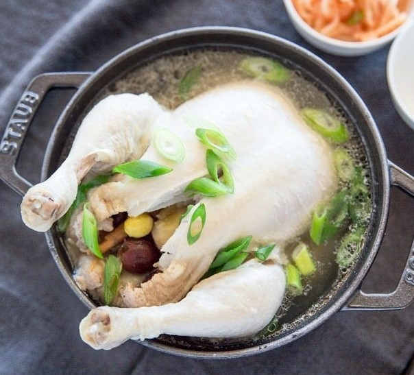

Samgyetang (Korean Ginseng Chicken Soup)
Ingredients
BROTH
- 1.2 kg whole chicken if you can, try to use cornish chicken as the typically recommended chicken size for samgyetang is about 400 g / 0.9 pounds per serving. However, I couldn’t find it, so I just used the smallest whole chicken I could find.
- 1.5 liter water
BSTUFFING
- 1/4 cup sweet rice (mochi rice or sticky rice), soaked in water for 2 hours (this can be done overnight and kept in the fridge)
- 1 ginseng , dried or fresh Korean ginseng or American ginseng (I used 15 g of dried ginseng)
- 4 whole garlic cloves , peeled
- 5 dried jujube
- 4 ginkgo nuts (optional), peeled if not already
- 4 chest nuts (optional), fresh or frozen, peeled if not already
GARNISH & TO SERVE
- 1 Tbsp green onion , thinly sliced
- fine sea salt , to taste
- ground black pepper , to taste
Directions
- 1Wash the chicken (including the cavity) thoroughly under running cold water.
- Stuff the chicken cavity with sweet rice, ginseng, garlic cloves, jujube, gingko nuts, and chest nuts. Cross the chicken legs and tie them with a cotton tie. Alternatively, you can make a slit on one side of the chicken thigh skin and put the other leg through it. (It sounds difficult but it’s not!) This is to minimise the stuffed ingredients falling out.
- Pour the water into a large pot and add the stuffed chicken. Boil the pot over medium high heat, covered, for 20 mins. Reduce the heat to medium to medium low and boil further until the chicken is fully cooked (about 30 mins further). Also, make sure the stuffed sweet rice is fully cooked too. Skim off any scum as desired.
- Transfer the chicken and the soup into a serving bowl. Garnish with the green onion and serve. Also, serve a small plate of salt and black pepper mixture (one plate per person). You can dip your chicken pieces into this sauce or add to your soup as desired. (Finally, don’t forget to serve some Kimchi too!)
Go Back!